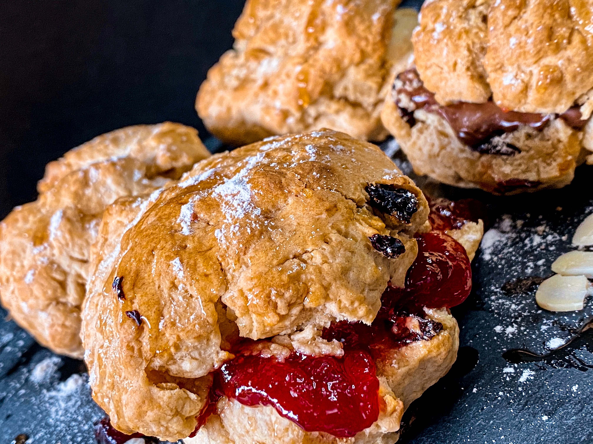

A scone is a baked good, usually made of either wheat or oatmeal with baking powder as a leavening agent, and baked on sheet pans. A scone is often slightly sweetened and occasionally glazed with egg wash. The scone is a basic component of the cream tea. It differs from teacakes and other types of sweets that are made with yeast. Scones were chosen as the Republic of Ireland representative for Café Europe during the Austrian Presidency of the European Union in 2006, while the United Kingdom chose shortbread.
The griddle scone is a variety of scone which is cooked on a griddle on the stove top rather than baked in the oven. This usage is also common in New Zealand where scones of all varieties form an important part of traditional colonial New Zealand cuisine.